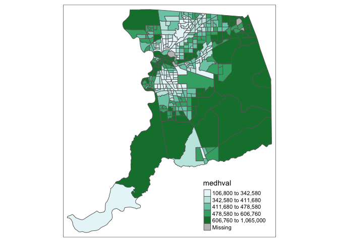

Lab 5: Spatial Autocorrelation
CRD 150 - Quantitative Methods in Community Research
Professor Noli Brazil
February 7, 2020
The objectives of the guide are as follows
- Learn spatial operations on polygon data
- Learn how to create a spatial weights matrix
- Calculate global spatial autocorrelation
This lab guide follows closely and supplements the material presented in Chapters 4.1 and 4.2 in the textbook Geocomputation with R (GWR) and Chapter 7 in the textbook Geographic Information Analysis.
Assignment 5 is due by 11:59 pm, February 13th on Canvas. See here for assignment guidelines. You must submit an .Rmd file and its associated .html file. Name the files: yourLastName_firstInitial_asgn05. For example: brazil_n_asgn05.
Open up an R Markdown file
Download the Lab template into an appropriate folder on your hard drive (preferably, a folder named ‘Lab 5’), open it in R Studio, and type and run your code there. Change the title (“Lab 5”) and insert your name and date. Don’t change anything else inside the YAML (the stuff at the top in between the ---). Also keep the grey chunk after the YAML. For a rundown on the use of R Markdown in labs, see Lab 1
Installing and loading packages
You’ll need to install the following packages in R. You only need to do it once, so if you’ve already installed these packages, skip the code. Also, don’t put these install.packages() in your R Markdown document. Copy and paste the code in the R Console. We’ll talk about what these packages provide as their relevant functions come up in the guide
install.packages("sp")
install.packages("rmapshaper")
install.packages("spdep")You’ll need to load the following packages. Unlike installing, you will always need to load packages whenever you start a new R session. You’ll also always need to use library() in your R Markdown file.
library(tidyverse)
library(tidycensus)
library(sf)
library(tigris)
#you need to let R know to bring in the spatial data as sf objects
options(tigris_class = "sf")
library(tmap)
library(rmapshaper)
library(sp)
library(spdep)Bringing spatial data into R
We will be working with census tract data on the foreign-born population in Sacramento city and the Sacramento metropolitan area. The following code is very similar to the code in Lab 4, so we won’t dwell on the specifics. We first need to get foreign-born population data for California census tracts. Let’s use our best friends the Census API and the function get_acs().
census_api_key("YOUR API KEY GOES HERE")Then use get_acs() to bring in the data.
ca.tracts <- get_acs(geography = "tract",
year = 2017,
variables = c(fb = "B05012_003", totp = "B05012_001"),
state = "CA",
survey = "acs5",
geometry = TRUE) %>%
select(-(moe)) %>%
spread(key = variable, value = estimate) %>%
mutate(pfb = fb/totp) %>%
select(GEOID, totp, pfb)Next, let’s bring in the Sacramento metropolitan area boundary using core_based_statistical_areas() from the tigris package.
cb <- core_based_statistical_areas(cb = TRUE, year=2017)
sac.metro <- filter(cb, grepl("Sacramento", NAME))Finally, bring in the Sacramento city boundary using places().
pl <- places(state = "CA", cb = TRUE, year=2017)
sac.city <- filter(pl, NAME == "Sacramento")Spatial data wrangling
A major goal in this lab is to compute the spatial autocorrelation of percent foreign born in the Sacramento metropolitan area. Before we can do this, we need to keep the tracts from ca.tracts that are in Sacramento. Easier said than done. Looking at the variables in the data frame ca.tracts, we find that there is no variable that indicates whether the tract belongs to the Sacramento metropolitan area. This includes the GEOID, which only provides state and county census IDs. In order to extract the Sacramento tracts, we need to do some data wrangling. However, not just any old data wrangling, but spatial data wrangling. Cue dangerous sounding music.
In Lab 4, we discovered that all of the nonspatial data wrangling techniques we learned in Lab 2 also apply to spatial data. However, spatial data have their own special set of wrangling operations. These functions modify spatial objects based on their location and shape. The sf package offers a suite of functions unique to wrangling spatial data. Most of these functions start out with the prefix st_. To see all of the functions, type in
methods(class = "sf")We won’t go through all of these functions as the list is quite extensive. You can take a look at Chapters 4 and 5 of GWR to see some examples of these functions. We’ll also go through spatial wrangling specific to points in Lab 6. But, let’s go through the more relevant ones for this lab guide and this class. The function we will be primarily using is st_join().
Intersect
A common spatial data wrangling issue is to subset a set of spatial objects based on their location relative to another spatial object. In our case, we want to keep California tracts that are in the Sacramento metro area. Think of what were doing here as something similar to taking a cookie cutter shaped like the Sacramento metro area (in our case, the sf object sac.metro) and cutting out the metro area from our cookie dough of census tracts (ca.tracts). We can do this using the st_join() function
sac.metro.tracts.int <- st_join(x = ca.tracts, y = sac.metro,
join = st_intersects, left=FALSE)The above code tells R to identify the polygons in ca.tracts that intersect with the polygon sac.metro. We indicate we want a polygon intersection by specifying join = st_intersects. The option left=FALSE tells R to eliminate the polygons from ca.tracts that do not intersect (make it TRUE and see what happens).
Mapping the border of the Sacramento metropolitan area sac.metro (in red) onto these cut out tracts (in blue), we get
ggplot() +
geom_sf(data = sac.metro.tracts.int, fill = "blue") +
geom_sf(data = sac.metro, fill = NA, color = "red")
As a reminder, if you are getting the following error when you map
---
Error in grid.Call(C_textBounds, as.graphicsAnnot(x$label), x$x, x$y, :
polygon edge not found
---rerun the code. Keep rerunning it until the error does not come up.
The opposite of st_intersects is st_disjoint. If two geometries are disjoint, they do not intersect, and vice-versa. Replace join = st_intersects with join = st_disjoin and see what you get.
Within
Do you see an issue with the tracts sac.metro.tracts.w? Using join = st_intersects returns all tracts that intersect sac.metro, which include those that touch the metro’s boundary. No bueno. We can instead use the argument join = st_within to return tracts that are completely within the metro.
# subset ca.tracts to those in sac.metro
sac.metro.tracts.w <- st_join(ca.tracts, sac.metro, join = st_within, left=FALSE)
ggplot() +
geom_sf(data = sac.metro.tracts.w, fill = "blue") +
geom_sf(data = sac.metro, fill = NA, color = "red")
Now it works!!! High Five o/ \o
If you look at the at sac.metro.tracts.w’s attribute table, you’ll see it includes all the variables from both ca.tracts and sac.metro. We don’t need these variables, so use select() to eliminate them. You’ll also notice that if variables share the same name, R will keep both and attach a .x and .y to the end. For example, GEOID was found in both ca.tracts and sac.metro, so R named one GEOID.x and the other that was merged in was named GEOID.y.
names(sac.metro.tracts.w)## [1] "GEOID.x" "totp" "pfb" "CSAFP" "CBSAFP" "AFFGEOID"
## [7] "GEOID.y" "NAME" "LSAD" "ALAND" "AWATER" "geometry"Keep the necessary variables and rename GEOID.x back to GEOID.
sac.metro.tracts.w <- sac.metro.tracts.w %>%
select(GEOID.x:pfb) %>%
rename(GEOID = "GEOID.x")Clipping
Census tracts neatly fall within a metropolitan area’s boundary, as it does for counties. In other words, tracts don’t spill over. But, it does spill over for cities. The left diagram in Figure 1 is an example of a metro area in red and four tracts in black - all the tracts fall neatly into the metro boundary. In contrast, the right diagram is an example of a city on top of four tracts - one tract falls neatly inside (top left), but the other three spill out.

Figure 1: Tracts falling in (Metro) and out (City) of boundaries
If we use st_join() with st_within for Sacramento city, we’ll produce the following plot
sac.city.tracts.w = st_join(ca.tracts, sac.city, join = st_within, left=FALSE)
ggplot() +
geom_sf(data = sac.city.tracts.w, fill = "blue") +
geom_sf(data = sac.city, fill = NA, color = "red") 
Can you guess what is going on here?
The blue polygons are the tracts we kept. You’ll notice that the city is empty around some of the edges of its boundary. In these cases, only portions of census tracts are within the boundary. st_within keeps tracts only if they are completely within the boundary. This is not good when tracts do not neatly fall within a boundary.
One way of dealing with this is to clip the portion of the tract that is inside the boundary. Clipping will keep just the portion of the tract inside the city boundary and discards the rest of the tract. We use the function ms_clip() which is in the rmapshaper package. In the code below, target = ca.tracts tells R to cut out ca.tracts using the sac.city boundaries.
sac.city.tracts.c <- ms_clip(target = ca.tracts, clip = sac.city, remove_slivers = TRUE)
ggplot() +
geom_sf(data = sac.city.tracts.c, fill = "blue") +
geom_sf(data = sac.city, fill = NA, color = "red")
Now, the city is filled in with tracts. To be clear what a clip is doing, Figure 2 shows a clip of the city example shown in Figure 1. With a clip, one tract is not clipped because it falls completely within the city (the top left tract). But, the other three are clipped - the portions that are within the boundary are kept (in blue), and the rest (with hash marks) are discarded from the map.
Because spatial data are not always precise, when you clip you’ll sometimes get unwanted sliver polygons. The argument remove_slivers = TRUE removes these slivers.

Figure 2: Clipping tracts
Sit back and reflect on what a clip is doing in terms of how it represents a city. When you clip a tract and present it as a neighborhood in Sacramento, what are you assuming about that tract? Do you think this assumption is correct? In what ways is the assumption is wrong?
The function st_overlaps us the opposite of st_within. Replace join = st_within with join = st_overlaps to see what this spatial operation produces. Play around with the other st_ options and see what you get (type in ? st_join to find all the options).
Calculate area
Another useful st_ function is st_area(), which calculates the area of a polygon. You might need the area, for example, if you want to calculate the density of something (e.g. the number of residents, crimes or trees per meters squared). To calculate the area, just plug in your sf polygon object inside st_area(). Let’s find the area of sac.city.tracts.w and save it to a vector named area
area <- st_area(sac.city.tracts.w)We find that the object area is of class units
class(area)## [1] "units"And the area is in meters squared
area## Units: [m^2]
## [1] 2327060.4 1512570.0 1463450.7 975098.4 866095.5 403388.1 498934.8
## [8] 568070.9 1577872.0 667854.1 792757.7 794857.9 1745237.3 3055769.1
## [15] 3524130.8 1716995.0 1106144.0 1037844.3 1541582.0 2725701.6 1218553.7
## [22] 3223586.3 985428.8 935123.8 1283782.4 924861.0 2318445.4 2573269.0
## [29] 1252373.7 1156023.0 1654346.9 984307.2 1599634.0 2382303.0 2260735.9
## [36] 1196046.4 1260038.8 1269987.0 1428132.3 4903570.3 2435402.5 3412785.2
## [43] 2996367.5 2179371.0 1968398.2 1652402.6 1887810.5 1646038.0 1207871.4
## [50] 2028272.7 1905370.8 1625437.4 1646702.9 3771040.5 1780715.0 1712940.2
## [57] 952471.2 2055643.1 1874746.5 8905278.9 6242702.1 1297534.2 2813347.0
## [64] 3461723.5 3888061.8 2212860.6 3289682.0 3926262.4 2471415.6 5290734.2
## [71] 2863616.9 3885897.9 2662222.0 1961448.6 1048691.9 673306.7 1979080.9
## [78] 4829069.3 4444028.8 2190099.8 2228979.1 1951779.9 8185367.9 2714006.4
## [85] 1461023.8 1871953.7 705029.9 1179100.6Let’s convert it from type units to type numeric by using the function as.numeric() and save it back into sac.city.tracts.w using the mutate() function
sac.city.tracts.w <- mutate(sac.city.tracts.w, area = as.numeric(st_area(sac.city.tracts.w)))You should find that the variable area is now in your dataset.
names(sac.city.tracts.w)## [1] "GEOID.x" "totp" "pfb" "STATEFP" "PLACEFP" "PLACENS"
## [7] "AFFGEOID" "GEOID.y" "NAME" "LSAD" "ALAND" "AWATER"
## [13] "geometry" "area"sf vs. sp spatial objects
So far, we’ve been using sf to represent spatial data in R. The traditional way of handling spatial data in R is to use the sp package, sf’s evil twin sister (actually, no, but almost). sp has been around since 2005, and thus has a rich ecosystem of tools built on top of it. However, it uses a rather complex data structure, which can make it challenging to use. sf is newer (first released in 2016) so it doesn’t have such a rich ecosystem. However, it’s much easier to use and fits in very naturally with the tidyverse.
The trend is gradually shifting towards the use of sf as the primary spatial package. We prefer sf over sp because it adheres to the tidy principles outlined in RDS, but because it is relatively new, sf is not wholly compatible with all of R’s spatial functions, particularly those that perform spatial data analysis, including calculating global measures of spatial correlation. In contrast, sp is compatible with most spatial functions. As such, we’ll need to convert sf objects to sp objects in some cases.
Use the as() function to convert sac.metro.tracts.w to an sp compatible object.
#this function to R to convert the sf object to an sp, using "Spatial" to designate sp
sac.metro.tracts.sp <- as(sac.metro.tracts.w, "Spatial")Then use the class() function on the sp object to see what kind of object we’ve just created.
class(sac.metro.tracts.sp)## [1] "SpatialPolygonsDataFrame"
## attr(,"package")
## [1] "sp"We find out that sac.metro.tracts.sp is a SpatialPolygonsDataFrame object. SpatialPolygonsDataFrame objects are almost like regular R data frames. However, unlike an sf spatial object, the attribute and feature data in an sp object are stored separately in what are known as data slots. To see the complexity of data slots, do a View() of the data set
View(sac.metro.tracts.sp)Delving into the feature data slot reveals a series of nested lists and S4 objects, which can be confusing to work with directly. We won’t go into the messy details of sp objects and how they differ from sf objects. We’ll stick with sf objects when possible, but shift to sp when needed, dancing around the details as much as possible and only talking about them when necessary. If you are interested, you can learn more about the sp package here, here and here.
Wednesday lecture setup
We went through spatial data wrangling operations during Monday’s lecture. Using these operations, we created a spatial dataset containing census tracts within the Sacramento metropolitan area. Let’s now use that dataset to calculate the spatial autocorrelation of percent foreign born.
First, install the following packages if you have not already done so (we did this during Monday’s lecture)
install.packages("sp")
install.packages("spdep")If you get the question “Do you want to install from sources the package which needs compilation?”, type in “no” and press return/enter.
Next, load the following packages
library(tidyverse)
library(sf)
library(tmap)
library(sp)
library(spdep)Next, bring into R the Sacramento metropolitan area tract shapefile that we created on Monday. For your convenience, I uploaded the file onto GitHub and you can download it onto your hard drive using the following code.
download.file(url = "https://raw.githubusercontent.com/crd150/data/master/week5wedfiles.zip", destfile = "week5wedfiles.zip")
unzip(zipfile = "week5wedfiles.zip")Read the shapefile into R using st_read().
sac.metro.tracts.w <- st_read("sacmetrotractsw.shp", stringsAsFactors = FALSE)There are two census tracts with zero population. An example of a zero population tract would be something like an airport or a tract located within a state or national forest. Because nobody lives there, let’s take these tracts out using the filter() function.
sac.metro.tracts.w <- filter(sac.metro.tracts.w, totp != 0)Now convert sac.metro.tracts.w to an sp object, which we need to do because the remaining functions in this lab only work with sp objects.
sac.metro.tracts.sp <- as(sac.metro.tracts.w, "Spatial")sac.metro.tracts.w contains percent foreign born and total population for tracts in the Sacramento metropolitan area. sac.metro.tracts.sp is the sp version of sac.metro.tracts.w. Go through the first half of the lab to determine how these objects were created.
Spatial autocorrelation
Our next goal is to determine whether the foreign-born population in Sacramento geographically clusters. Let’s focus on the Sacramento metropolitan area. We can explore clustering by examining maps and scatterplots. We can also formally test for clustering by calculating the Moran’s I, which was covered in OSU Ch. 7.
Exploratory mapping
Before computing spatial autocorrelation, you should map your variable to see if it looks like it clusters across space. Using the function tm_shape() and the mapping principles we learned in last week’s lecture, let’s make a nice map showing the proportion (or percent) foreign-born in the Sacramento metro area using quantile breaks.
tm_shape(sac.metro.tracts.w, unit = "mi") +
tm_polygons(col = "pfb", style = "quantile",palette = "Reds",
border.alpha = 0, title = "") +
tm_scale_bar(breaks = c(0, 10, 20), size = 1) +
tm_compass(type = "4star", position = c("left", "bottom")) +
tm_layout(main.title = "Percent foreign-born in Sacramento Metropolitan Area
Tracts", main.title.size = 0.95, frame = FALSE)
It does look like the foreign-born population clusters. In particular, there appears to be high concentrations of foreign-born residents in South and North Sacramento city and the more fringe areas of the metro in the North.
Spatial weights matrix
Before we can formally model the spatial dependency shown in the above map, we must first cover how neighborhoods are spatially connected to one another. That is, what does “near” mean when we say “near things are more related than distant things”? You need to define
- Neighbor connectivity (who is you neighbor?)
- Neighbor weights (how much does your neighbor matter?)
The functions we will use below are specific to sp objects. As a general rule, we’ll stick with our sf object sac.metro.tracts.w when possible, but shift to sac.metro.tracts.sp when needed.
Neighbor connectivity
A common way of defining neighbors is to see who shares a border. The two most common ways of defining contiguity is Rook and Queen adjacency (Figure 3). Rook adjacency refers to neighbors that share a line segment. Queen adjacency refers to neighbors that share a line segment (or border) or a point (or vertex).

Figure 3: Geographic contiguity
Neighbor relationships in R are represented by neighbor nb objects. An nb object identifies the neighbors for each feature in the dataset. We use the command poly2nb() from the spdep package to create a contiguity-based neighbor object.
Let’s specify Queen connectivity. The function poly2nb() only takes in sp objects, so we’ll need to use sac.metro.tracts.sp here.
sacb<-poly2nb(sac.metro.tracts.sp, queen=T)You plug the object sac.metro.tracts.sp into the first argument of poly2nb() and then specify Queen contiguity using the argument queen=T. To get Rook adjacency, change the argument to queen=F.
The function summary() tells us something about the neighborhood.
summary(sacb)The average number of neighbors (adjacent polygons) is 6.3, 1 polygon has 1 neighbor and 1 has 18 neighbors.
Neighbor weights
We’ve established who our neighbors are by creating an nb object. The next step is to assign weights to each neighbor relationship. The weight determines how much each neighbor counts. You will need to employ the nb2listw() command, which will you give you a spatial weights object.
sacw<-nb2listw(sacb, style="W", zero.policy = TRUE)In the command, you first put in your neighbor nb object (sacb) and then define the weights style = "W". Here, style = "W" indicates that the weights for each spatial unit are standardized to sum to 1 (this is known as row standardization - see page 49 in OSU). For example, if census tract 1 has 3 neighbors, each of those neighbors will have weights of 1/3. This allows for comparability between areas with different numbers of neighbors.
The zero.policy = TRUE argument tells R to ignore cases that have no neighbors. How can this occur? Figure 4 provides an example. It shows tracts in Los Angeles county. You’ll notice two tracts that are not geographically adjacent to other tracts - they are literally islands (Catalina and San Clemente). So, if you specify queen adjacency, these islands would have no neighbors. If you conduct a spatial analysis of Los Angeles county tracts in R, most functions will spit out an error indicating that you have polygons with no neighbors. To avoid that, specify zero.policy = TRUE, which will ignore all cases without neighbors.

Figure 4: Los Angeles county tracts
Moran Scatterplot
We’ve now defined what we mean by neighbor by creating an nb object and the influence of each neighbor by creating a spatial weights matrix. The map of percent foreign born showed that neighborhood percent foreign born appears to be clustered in Sacramento. We can visually explore this a little more by plotting percent foreign-born on the x-axis and the average percent foreign born of one’s neighbors (also known as the spatial lag) on the y-axis. This plot is known as a Moran scatterplot.
You can create a Moran scatterplot using the function moran.plot().
moran.plot(sac.metro.tracts.sp$pfb, sacw,
xlab = "% foreign born",
ylab = "Neighbors % foreign born")
The first argument is the variable you want to calculate spatial autocorrelation for. Because we are in the sp world, which is not tidy friendly, we refer to variables in sac.metro.tracts.sp’s using the dollar sign $. sac.metro.tracts.sp$pfb will give you the percent foreign born as a vector.
sac.metro.tracts.sp$pfbThe second argument is the spatial weights matrix that defines neighbor and interaction. The xlab and ylab arguments provides clean labels for the x and y axes.
The x-axis is a tract’s percent foreign born and the y-axis is the average percent foreign born of that tract’s neighbors. Looks like a fairly strong positive association - the higher your neighbors’ percent foreign born, the higher your own neighborhood’s percent foreign born. As we discussed in lecture, you can separate the plot into four quadrants based on positive and negative spatial autocorrelation.
Moran’s I
The map and Moran scatterplot provide descriptive visualizations of spatial clustering (autocorrelation) in the percent foreign born. But, rather than eyeballing the correlation, we need a quantitative and objective approach to measuring the degree to which places cluster. This is where measures of spatial autocorrelation step in. An index of spatial autocorrelation provides a summary over the entire study area of the level of spatial similarity observed among neighboring observations.
The most popular test of spatial autocorrelation is the Moran’s I test. Use the command moran.test() in the spdep package to calculate the Moran’s I.
moran.test(sac.metro.tracts.sp$pfb, sacw) ##
## Moran I test under randomisation
##
## data: sac.metro.tracts.sp$pfb
## weights: sacw
##
## Moran I statistic standard deviate = 23.926, p-value < 2.2e-16
## alternative hypothesis: greater
## sample estimates:
## Moran I statistic Expectation Variance
## 0.6255551789 -0.0020703934 0.0006881139We find that the Moran’s I is positive (0.63) and statistically significant (p-value < 0.05). Remember from lecture that the Moran’s I is simply a correlation, and we learned from Handout 3 that correlations go from -1 to 1. A 0.63 correlation is fairly high (meeting the rule of thumb of 0.30 that OSU states on page 206), indicating strong positive clustering. Moreover, we find that this correlation is statistically significant (p-value basically at 0).

This work is licensed under a Creative Commons Attribution-NonCommercial 4.0 International License.
Website created and maintained by Noli Brazil